Neural networks from scratch
Four notebooks where I build a neural network with Python and NumPy and no deep learning framework. It starts with a single neuron and ends with backpropagation. Each step has a hand-drawn diagram of what the code computes.
1. Neurons and layers
A neuron multiplies each input by a weight, adds the results and adds a bias. With three inputs:
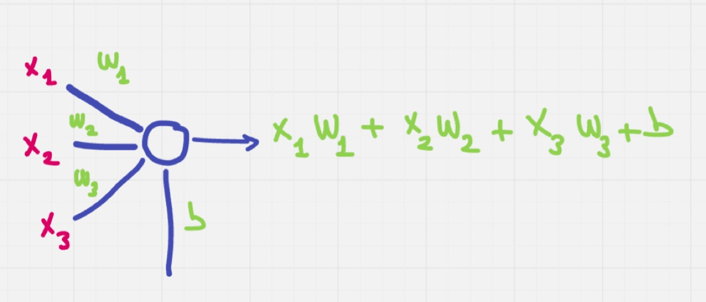
One neuron, three inputs.
inputs = [7, 3, 5]
weights = [0.5, -0.6, 0.8]
bias = 1.2
# Calculating the output of the neuron
output = (inputs[0] * weights[0] + inputs[1] * weights[1] + inputs[2] * weights[2] + bias)
print(f"Output of neuron with 3 inputs: {output}")Output of neuron with 3 inputs: 6.9
A layer is several neurons reading the same inputs, each with its own weights and bias. Three neurons over four inputs give three outputs.
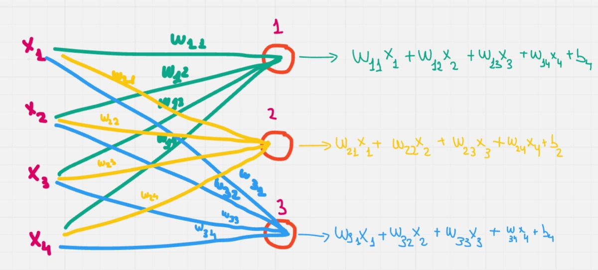
Every input goes to every neuron.
With NumPy the whole layer is one dot product plus the biases:
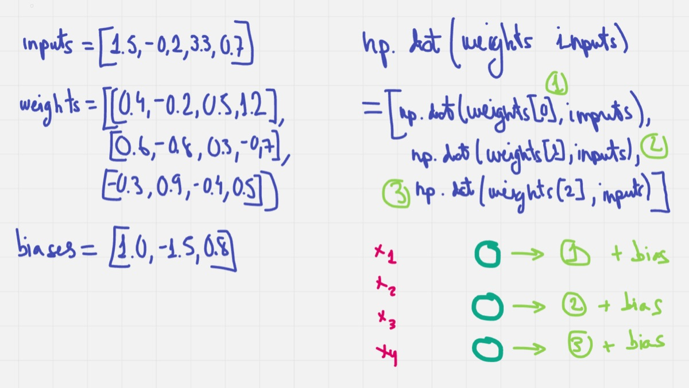
Each row of the weight matrix is one neuron.
inputs = [1.5, -2.0, 3.3, 0.7]
# Weights for each neuron
weights = [
[0.4, -0.2, 0.5, 1.2],
[0.6, -0.8, 0.3, -0.7],
[-0.3, 0.9, -0.4, 0.5]
]
# Biases for each neuron
biases = [1.0, -1.5, 0.8]
# Calculate the layer outputs
layer_outputs = np.dot(weights, inputs) + biases
print(layer_outputs)[ 4.49 1.5 -2.42]
To run several samples at once, the inputs turn into a matrix with one row per sample. The weights then have to be transposed so the shapes match, and each row of the result is the layer output for one sample.
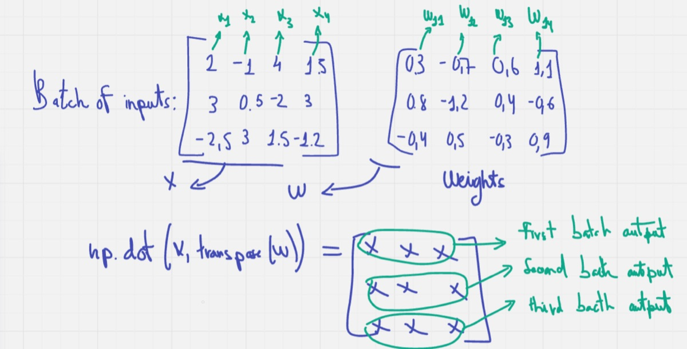
A batch of three samples through the layer.
inputs = [
[2.5, -1.0, 4.0, 1.5],
[3.0, 0.5, -2.5, 3.5],
[-2.0, 3.5, 2.0, -1.5]
]
# Weights for each neuron
weights = [
[0.4, -0.3, 0.6, 1.2],
[0.7, -1.0, 0.3, -0.8],
[-0.5, 0.6, -0.2, 1.0]
]
# Biases for each neuron
biases = [1.5, -0.5, 2.5]
inputs_array = np.array(inputs)
weights_array = np.array(weights)
biases_array = np.array(biases)
outputs = np.dot(inputs_array, weights_array.T) + biases_array
print(outputs)[[ 7. 2.25 1.35]
[ 5.25 -2.45 5.3 ]
[-0.95 -3.6 3.7 ]]
A second layer takes the first layer's output as its input:
# Calculate the output of the first layer
layer1_outputs = np.dot(inputs_array, weights_array.T) + biases_array
# Calculate the output of the second layer
layer2_outputs = np.dot(layer1_outputs, weights2_array.T) + biases2_array
print(layer2_outputs)[[ 0.894 -1.7 -2.313 ]
[ 2.483 -2.1305 -4.4665]
[ 1.164 0.822 -3.191 ]]
2. Activation functions
Without an activation function, stacking layers still gives you a linear model. The notebook goes through sigmoid, tanh, ReLU, Leaky ReLU and softmax, with the formula of each one and where it falls short. Sigmoid and tanh flatten out for large inputs and the gradient vanishes there; ReLU avoids that but can leave neurons stuck at zero, which is what Leaky ReLU fixes.
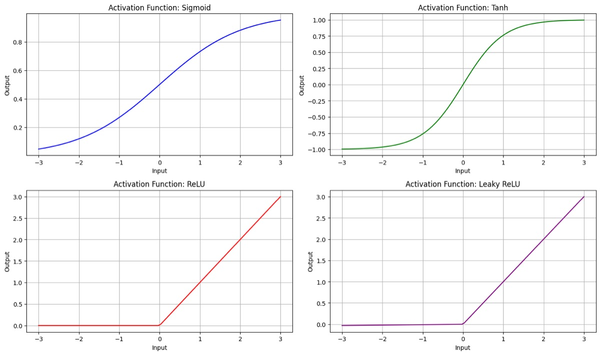
Sigmoid, tanh, ReLU and Leaky ReLU.
Then they go into a network: two inputs, a hidden layer of three neurons with ReLU, and an output layer of three neurons with softmax, so the outputs are probabilities that add up to 1.
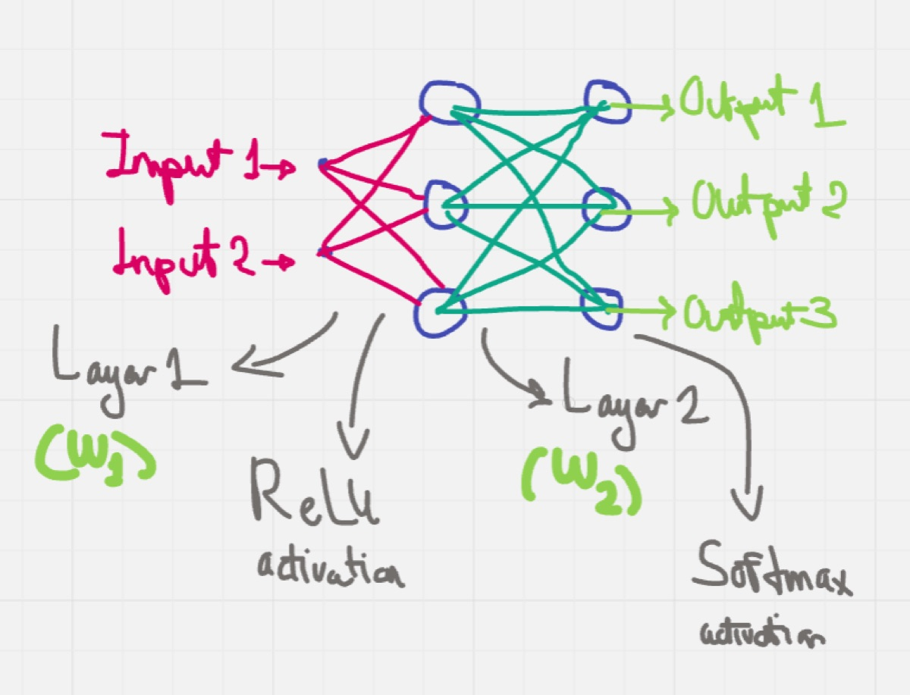
ReLU in the hidden layer, softmax at the output.
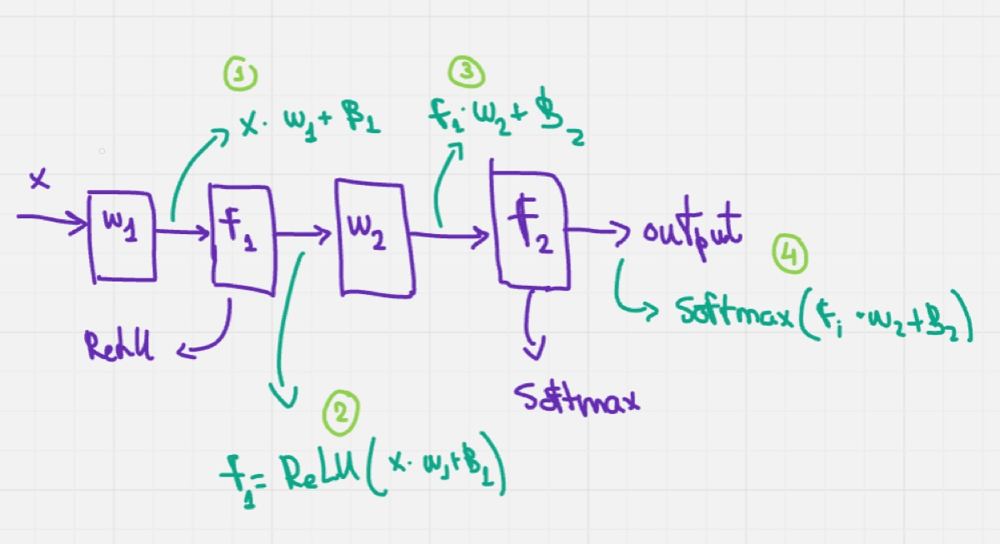
The forward pass in order.
import numpy as np
def relu(x):
return np.maximum(0, x)
def softmax(z):
exp_values = np.exp(z - np.max(z))
sum_exp_values = np.sum(exp_values)
probabilities = exp_values / sum_exp_values
return probabilities
class NeuralNetworkWithSoftmax:
def __init__(self):
self.weights_hidden = np.array([[0.1, 0.2], [0.3, 0.4], [0.5, 0.6]])
self.bias_hidden = np.array([0.1, -0.1, 0.05])
self.weights_output = np.array([[0.7, 0.8, 0.9], [-0.1, -0.2, -0.3], [0.3, 0.2, 0.1]])
self.bias_output = np.array([0.1, -0.1, 0.05])
def forward(self, input_data):
# Forward pass in the hidden layer
hidden_layer_input = np.dot(self.weights_hidden, input_data) + self.bias_hidden
hidden_layer_output = relu(hidden_layer_input) # Apply ReLU function in the hidden layer
# Forward pass in the output layer
output_layer_input = np.dot(self.weights_output, hidden_layer_output) + self.bias_output
output = softmax(output_layer_input) # Apply Softmax function in the output layer to get probabilities
return output
network = NeuralNetworkWithSoftmax()
input_data = np.array([2.0, 3.0])
output = network.forward(input_data)
print("Output probabilities (Softmax):", output)Output probabilities (Softmax): [0.97384346 0.00231927 0.02383728]
3. Loss and gradients
Training needs a number for how wrong the network is. Mean squared error averages the squared differences between prediction and label, and cross-entropy is the usual choice for classification.
import numpy as np
def mse(y_pred, y_real):
return np.mean((y_pred - y_real) ** 2)
y_pred = np.array([0.8, 0.6, 0.2])
y_real = np.array([1.0, 0.0, 0.0])
error = mse(y_pred, y_real)
print("Mean Squared Error (MSE):", error)Mean Squared Error (MSE): 0.14666666666666664
import numpy as np
# Define the cross-entropy function
def cross_entropy(y_pred, y_real):
epsilon = 1e-15 # Avoid log(0)
y_pred = np.clip(y_pred, epsilon, 1 - epsilon)
return -np.sum(y_real * np.log(y_pred))
# Example usage
y_pred = np.array([0.7, 0.2, 0.1])
y_real = np.array([1, 0, 0])
error = cross_entropy(y_pred, y_real)
print("Cross-Entropy:", error)Cross-Entropy: 0.35667494393873245
What training actually uses is the gradient of the loss. With softmax at the output, the gradient of cross-entropy is just the prediction minus the label.
# Gradient of MSE
def gradient_mse(y_pred, y_real):
return 2 * (y_pred - y_real) / len(y_real)
# Gradient of Cross-Entropy (when using Softmax)
def gradient_cross_entropy(y_pred, y_real):
return y_pred - y_real
# Example usage
grad_mse = gradient_mse(y_pred, y_real)
grad_cross_entropy = gradient_cross_entropy(y_pred, y_real)
print("Gradient of MSE:", grad_mse)
print("Gradient of Cross-Entropy:", grad_cross_entropy)Gradient of MSE: [-0.2 0.13333333 0.06666667]
Gradient of Cross-Entropy: [-0.3 0.2 0.1]
4. Backpropagation
Gradient descent moves every weight a small step against its gradient: new value = current value - learning rate × gradient. Backpropagation is how you get those gradients, applying the chain rule from the loss back to each weight.
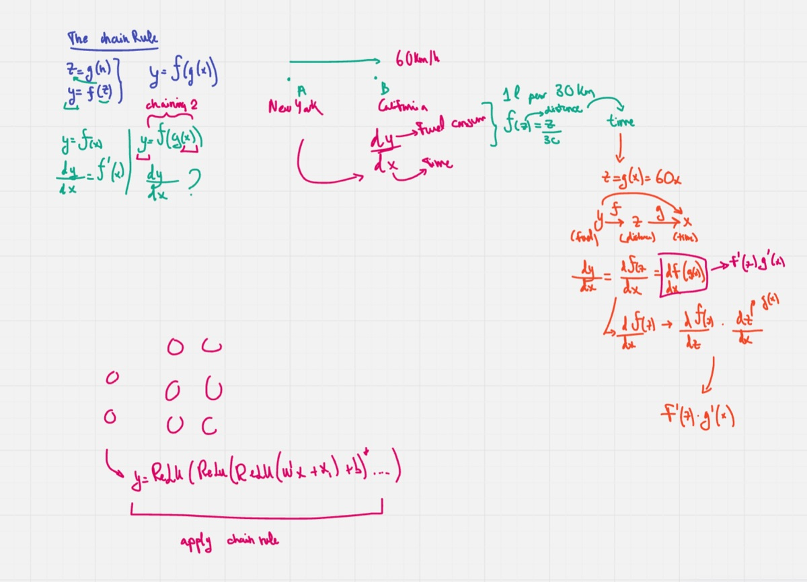
The chain rule.
I worked it out by hand first for a single neuron with three inputs, ReLU and a squared error:
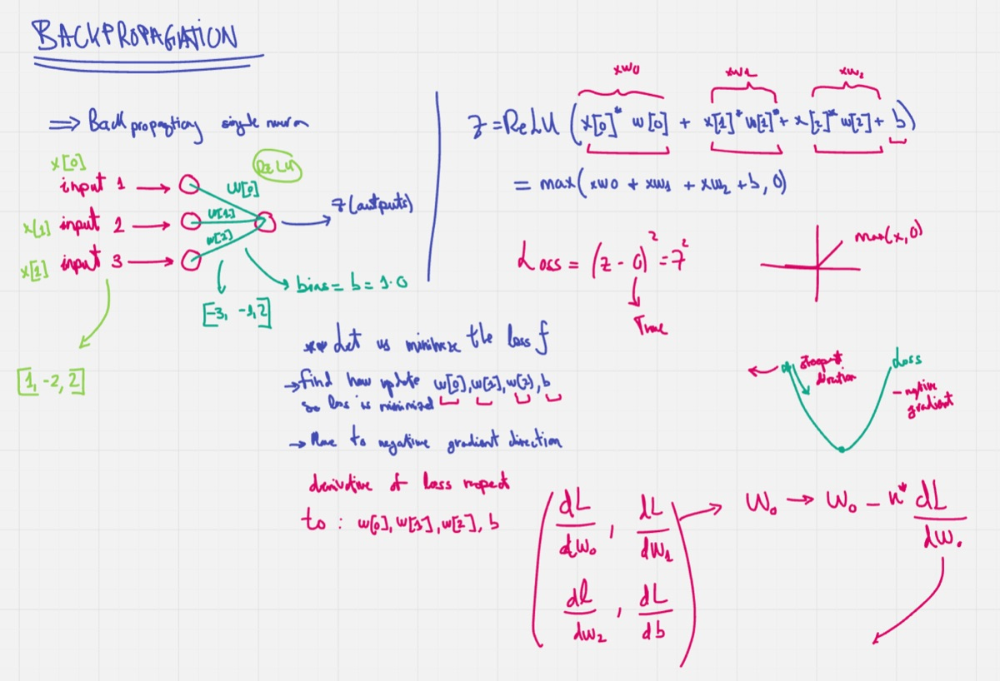
Forward pass, loss and the derivatives needed.
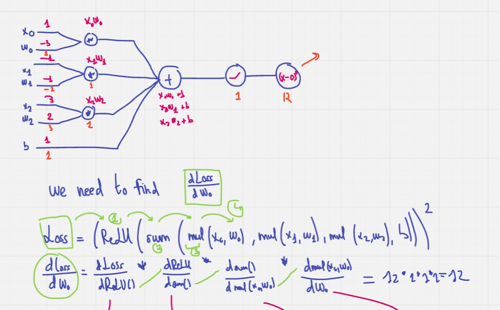
The derivative of the loss with respect to w0.
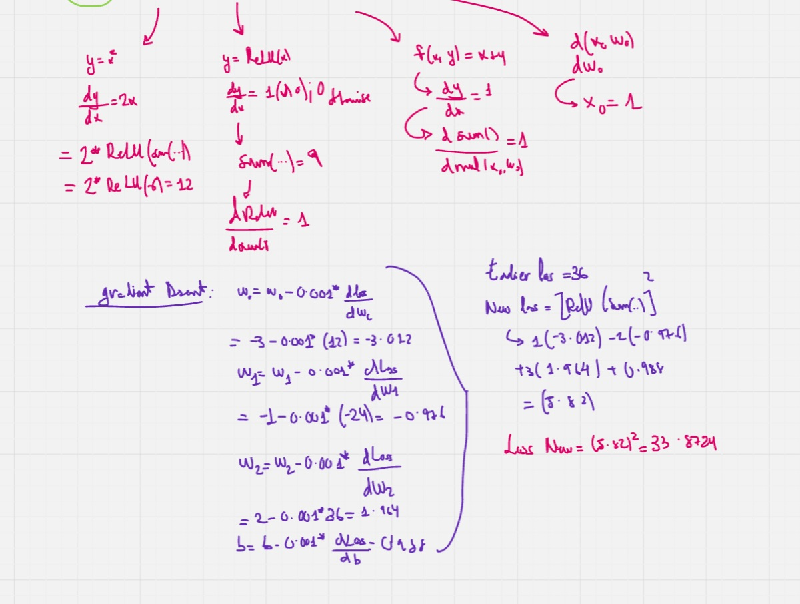
One update by hand. The new loss, 33.87, is the same one the code prints at iteration 2.
import numpy as np
weights = np.array([-3.0, -1.0, 2.0])
bias = 1.0
inputs = np.array([1.0, -2.0, 3.0])
target_output = 0.0
learning_rate = 0.001
def relu(x):
return np.maximum(0, x)
def relu_derivative(x):
return np.where(x > 0, 1.0, 0.0)
for iteration in range(200):
# Forward pass
linear_output = np.dot(weights, inputs) + bias
output = relu(linear_output)
loss = (output - target_output) ** 2
# Backward pass
dloss_doutput = 2 * (output - target_output)
doutput_dlinear = relu_derivative(linear_output)
dlinear_dweights = inputs
dlinear_dbias = 1.0
dloss_dlinear = dloss_doutput * doutput_dlinear
dloss_dweights = dloss_dlinear * dlinear_dweights
dloss_dbias = dloss_dlinear * dlinear_dbias
# Update weights and bias
weights -= learning_rate * dloss_dweights
bias -= learning_rate * dloss_dbias
print(f"Iteration {iteration + 1}, Loss: {loss}")
print("Final weights:", weights)
print("Final bias:", bias)Iteration 1, Loss: 36.0
Iteration 2, Loss: 33.872399999999985
...
Iteration 100, Loss: 0.08651788326054576
...
Iteration 200, Loss: 0.00019563778572677352
The last notebook does the same for the two-layer network. The output error is the cross-entropy gradient, it goes back through the output weights and the ReLU derivative into the hidden layer, and then every weight and bias takes one gradient descent step:
def backward(self, input_data, y_pred, y_real):
# Error in the output layer
output_error = y_pred - y_real # Cross-entropy gradient with Softmax
# Gradients of weights and biases in the output layer
grad_weights_output = np.outer(output_error, self.hidden_layer_output)
grad_bias_output = output_error
# Error in the hidden layer
hidden_error = np.dot(self.weights_output.T, output_error) * relu_derivative(self.hidden_layer_input)
grad_weights_hidden = np.outer(hidden_error, input_data)
grad_bias_hidden = hidden_error
# Adjust weights and biases using gradient descent
self.weights_output -= self.learning_rate * grad_weights_output
self.bias_output -= self.learning_rate * grad_bias_output
self.weights_hidden -= self.learning_rate * grad_weights_hidden
self.bias_hidden -= self.learning_rate * grad_bias_hidden